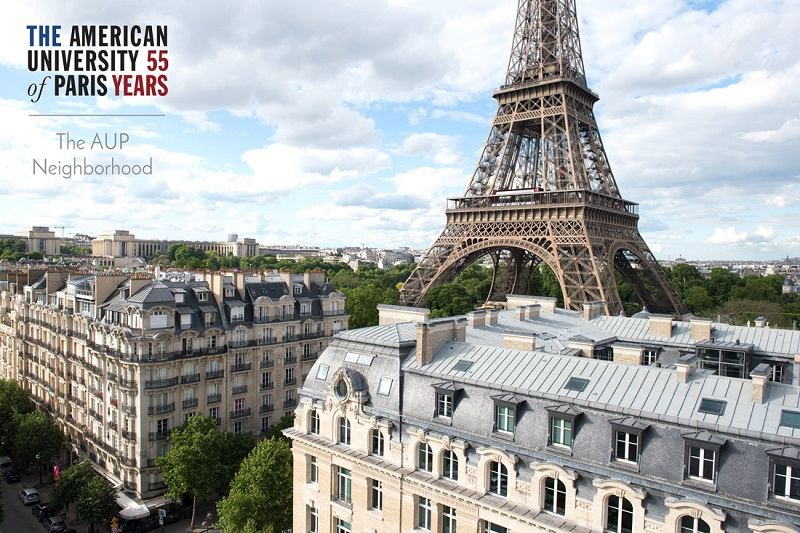

Acasă
Acasă Țări
Țări Catalog
Catalog Galerie foto
Galerie foto Experiente
Experiente Despre
DespreAmerican University of Paris



Descriere
Paris este locul de referinţă pentru afaceri, diplomaţie, cultură şi frumuseţe, iar American University of Paris este situată în zona cosmopolită a oraşului, întruchipând principiile învăţământului american: flexibilitatea ideilor, libera iniţiativă şi înaltele performanţe academice. Punctele forte ale universităţii sunt educaţia bogată şi solidă, grupe de studiu mici, dotarea tehnologică modernă şi nu în ultimul rând atmosfera confortabilă. Aici învaţă studenţi din lumea întreagă având ca îndrumători lectori, profesori şi oameni de ştiinţă de talie mondială. Studenţii participă activ la viaţa intelectuală, socială şi culturală a capitalei franceze prin cursuri practice şi proiecte reale. În timpul studiului elevii se pregătesc pentru realizarea profesională în condiţii de dezvoltare globală sau pentru o carieră academică sau ştiinţifică în universităţi de elită.
Informații generale
Tara: Franta
Limba de predare: engleza
Ani de studiu: Bachelor: 4; Master: 1-2
Inceput an: iulie, septembrie
Burse: Da
Campusuri: Paris
Aeroporturi: Paris CDG
Cazare: Universitatea colaboreaza cu parteneri care pun la dispozitie unitati complet mobilate, in apartamente cu 2 sau 3 camere, localizate in Paris. Toate cladirile se afla la 30 de minute de mers pe jos sau cu mijloacele de transport in comun de campus.
Undergraduate Programs:
Art History
Comparative Literature
Computer Science
Creative Writing
Entrepreneurship
Environmental Studies
Film Studies
Fine Arts
Gender, Sexuality and Society
Global Communications
History
History, Law, and Society
International Business Administration
International and Comparative Politics
International Economics
International Finance
Journalism
Literary Studies and the Creative Arts
Management
Management Information Systems
Marketing
Middle East Pluralities
Philosophy
Philosophy, Politics, and Economics
Psychology
Quantitative Environmental Science
Self-Designed Major
Graduate Programs:
Master of Arts in Global Communications
Master of Arts in Global Communications, Development Communications Track
Master of Arts in Global Communications, Fashion Track
Master of Arts in Global Communications, Visual and material Culture Track
Master of Arts in International Affairs
Master of Arts in International Affairs, Conflict Resolution, and Civil Society
Master of Science in International Management
Master of Science in International Management, Sustainability Systems Focus
Master of Science in International Management, NGO and Mission Based Management Focus